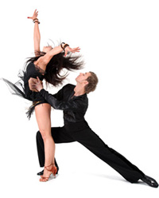

Taniec Towarzyski
Jedna z najbardziej zró¿nicowanych dyscyplin tanecznych - kombinacja 10 tañców, z których ka¿dy charakteryzuje siê innym nastrojem. Sk³ada siê z dwóch stylów:
TAÑCE STANDARDOWE :
- walc angielski - pe³en gracji i elegancji, wprowadza w nastrój lekko¶ci i spokoju
- tango - pe³ne energii i agresji; pozwala wyraziæ rado¶ci i bóle towarzysz±ce mi³o¶ci - s³odycz namiêtno¶ci, ogieñ zazdro¶ci i gorycz porzucenia.
- walc wiedeñski - niezwykle dostojny i widowiskowy, niegdy¶ nieod³±czny element ka¿dego europejskiego balu. Tañczony jest w rytmie podobnym do rytmu walca angielskiego, lecz dwukrotnie szybszym.
- foxtrot - "najtrudniejszy spacer ¶wiata". Charakteryzuje siê swingowym, d³ugim, posuwistym krokiem i g³adkim ruchem cia³a do wolnej, dusznej, jazzowej muzyki.
- quickstep - m³odszy, radosny brat foxtrota; pe³en podskoków i tanecznych figli, które sprawiaj±, i¿ tañcz±ca go para wydaje siê unosiæ nad parkietem
- samba - czêsto interpretowana jako zaloty kochanków próbuj±cych zwróciæ na siebie uwagê i zaimponowaæ sobie nawzajem.
- cha-cha - interpretowana jest podobnie, choæ posiada dodatkowo cechy zabawy i ¿artu. Wywodzi siê z Kuby i ma swoje korzenie w rumbie i mambo.
- rumba - taniec mi³o¶ci. W rytmie zmys³owej, wolnej muzyki rozgrywa siê pe³en emocji rytua³, w którym kobieta, za pomoc± wdziêcznych, kokieteryjnych ruchów stara siê uwie¶æ swojego partnera.
- paso doble - przenosi nas na arenê korridy. Mê¿czyzna wciela siê w postaæ torreadora, by w marszowym rytmie rozegraæ pe³n± napiêcia walkê z bykiem. Kobieta przeobra¿a siê w tancerkê flamenco, muletê b±d¼ byka, co czyni ten taniec emocjonuj±cym, symbolicznym spektaklem.
- jive - spokrewniony z rock and rollem, boogie-woogie i swingiem; szybki i radosny taniec z du¿± ilo¶ci± szybkich i krótkich kopniêæ oraz bardzo rytmiczn± i mocno akcentowan± muzyk±.
- Disco Tep (2 na 1)
INSTRUKTORZY


GRAFIK
Taniec Towarzyski |
| Termin | Pocz±tek | Uwagi | |
| Grupa 1 pocz±tkuj±ca | poniedzia³ek godz. 19.30 | grupa ruszy³a | mo¿na siê zapisaæ |
| Grupa 2 pocz±tkuj±ca | wtorek godz. 18.30 | grupa ruszy³a | mo¿na siê zapisaæ |
| Grupa 3 ¶r. zaawansowana | czwartek godz. 19.00 | grupa ruszy³a | mo¿na siê zapisaæ |
Mo¿esz siê zapisaæ u¿ywaj±c poni¿szego formularza
Zajêcia rozpoczynaj± siê gdy zbierze siê odpowiednia liczba osób.Wpisz poprawne dane aby otrzymaæ od nas informacjê zwrotn± oddno¶nie rozpoczêcia kursu

Cennik:
1 stopieñ (4 zajêcia po 1h) - 75z³jednorazowe wejscie - 25z³
Czas trwania zajêæ:
1 hUwaga
Na zajêcia mo¿na przyj¶æ samemu. Nie trzeba mieæ partnera!!!wykonanie: projektowanie stron www
© SempreTaniec.pl Wszelkie prawa zastrze¿one!